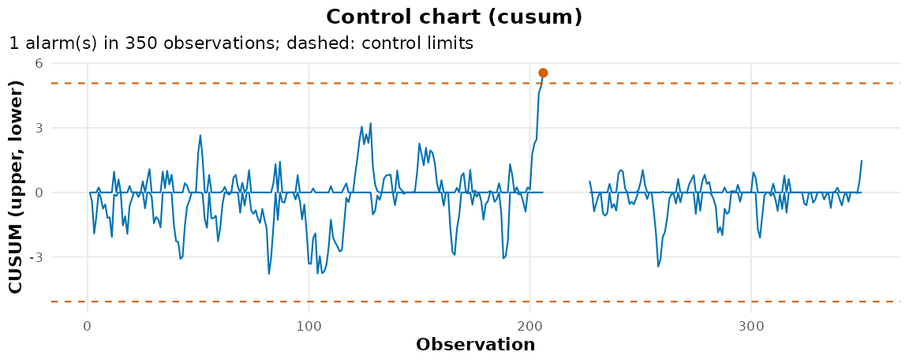
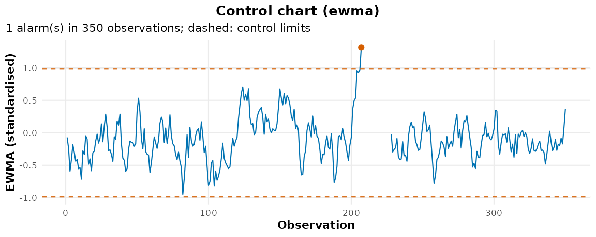

Control Charts Are Changepoint Detectors
Youzhi
Yu
University of Chicago
Source: vignettes/articles/control-charts.Rmd
control-charts.RmdStatistical process control and sequential changepoint detection are
the same mathematics in two vocabularies. A CUSUM chart is a sequential
likelihood-ratio test for a shift in the mean; an EWMA chart is its
smoothed relative; the in-control average run length a quality engineer
calls ARL0 is the false-alarm budget a changepoint paper calls ARL0 too.
This page translates between the two, with the charts
cpt_monitor() runs.
The dictionary
| Process control | Changepoint detection | In this package |
|---|---|---|
| Phase I: establish the in-control process | Offline detection on the history | cpt_detect(history) |
| Phase II: monitor new data | Sequential detection |
cpt_monitor() and
cpt_update()
|
| Out-of-control signal | Alarm | alarms(monitor) |
| In-control ARL (ARL0) | Average run length to a false alarm | arl0 = |
| Out-of-control ARL (ARL1) | Detection delay | cpt_delay() |
CUSUM reference value k
|
Half the shift tuned for |
k = 0.5 for a one-sigma shift |
Decision interval h, EWMA limit
L
|
Threshold | solved from arl0, or
limit =
|
Phase I: is the history in control?
A chart is only as good as the baseline it standardises by. Check the history for changes before trusting it:
set.seed(2030)
history <- rnorm(400, mean = 10, sd = 2)
cpt_detect(history, method = "pelt", change_in = "meanvar")$changepoints
#> # A tibble: 0 × 2
#> # ℹ 2 variables: cp <int>, cp_value <dbl>No changepoints: the history can serve as the baseline.
Phase II: monitor
stream <- c(rnorm(200, 10, 2), rnorm(150, 12, 2))
cusum <- cpt_update(cpt_monitor("cusum", baseline = history, arl0 = 500),
stream)
ewma <- cpt_update(cpt_monitor("ewma", baseline = history, arl0 = 500),
stream)
cusum
#> ggcpt_monitor (cusum, native implementation)
#> Chart: k = 0.5, h = 5.071 (in-control ARL 500)
#> Baseline observations: 400
#> Monitored observations: 350
#> Alarms: 1
#> Restart after alarm: TRUE (re-learning 20 observations)
#>
#> # A tibble: 1 × 3
#> time statistic threshold
#> <int> <dbl> <dbl>
#> 1 206 5.55 5.07
autoplot(cusum, plot_type = "control_chart")
autoplot(ewma, plot_type = "control_chart")
The shift of one standard deviation arrives at observation 201. Scored the way the sequential literature scores it, by delay and false alarms:
glance(cpt_delay(cusum, truth = 200))
#> # A tibble: 1 × 7
#> n_changes n_detected mean_delay median_delay n_false_alarms arl n_obs
#> <int> <int> <dbl> <dbl> <int> <dbl> <int>
#> 1 1 1 6 6 0 Inf 350
glance(cpt_delay(ewma, truth = 200))
#> # A tibble: 1 × 7
#> n_changes n_detected mean_delay median_delay n_false_alarms arl n_obs
#> <int> <int> <dbl> <dbl> <int> <dbl> <int>
#> 1 1 1 7 7 0 Inf 350The calibration
Both limits are solved for arl0 by the Markov-chain
approximation of the run length (Brook and Evans 1972 for the CUSUM;
Lucas and Saccucci 1990 for the EWMA), which reproduces the published
tables: a CUSUM with k = 0.5 runs 168 in control at
h = 4 and 465 at h = 5. Through the monitor
itself, against the target:
cal <- cpt_calibration
cal[grepl("cusum|ewma", cal$call), c("call", "nominal", "realised", "mcse")]
#> # A tibble: 2 × 4
#> call nominal realised mcse
#> <chr> <dbl> <dbl> <dbl>
#> 1 "cpt_monitor(\"cusum\", arl0 = 500)" 500 495 25
#> 2 "cpt_monitor(\"ewma\", arl0 = 500)" 500 531 28The calibration treats the baseline’s mean and standard deviation as exact, so a longer baseline keeps the run length on target: a few hundred observations is a good minimum.
Choosing the chart
| You expect | Use |
|---|---|
| A sustained shift of about one standard deviation | cpt_monitor("cusum", k = 0.5) |
| A small shift, half a standard deviation or less | cpt_monitor("ewma", lambda = 0.05) |
| A shift of unknown size |
cpt_monitor("edetector"), which mixes over
sizes with a run-length guarantee |
| A change in distribution, not just the mean | cpt_monitor("cpm") |
| Many streams at once | cpt_monitor("ocd") |
Rational subgroups, Western Electric run rules and capability indices
are part of formal process control and are not modelled here; for a
quality programme built on them, use a dedicated package such as
qcc, and use this one for the detection, the delay
accounting and the plots.
References
Brook, D. and Evans, D. A. (1972). An approach to the probability distribution of CUSUM run length. Biometrika, 59(3), 539-549.
Lucas, J. M. and Saccucci, M. S. (1990). Exponentially weighted moving average control schemes: properties and enhancements. Technometrics, 32(1), 1-12.
Page, E. S. (1954). Continuous inspection schemes. Biometrika, 41(1/2), 100-115.
Roberts, S. W. (1959). Control chart tests based on geometric moving averages. Technometrics, 1(3), 239-250.